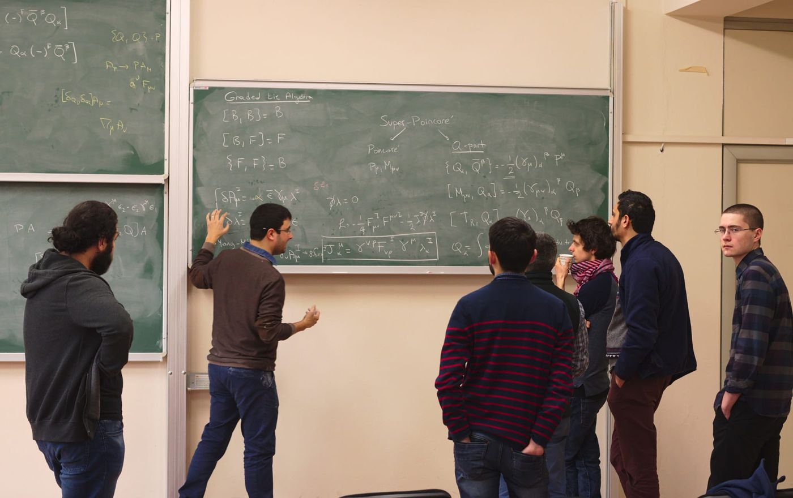

Carroll Group
We are currently working on string-theoretic realizations of Carroll and Galilei symmetries, and on the non-local structure of Carrollian holography, with possible resolutions coming from the structure of magnetic Carroll supersymmetry.
- İlayda Bulunur
- Salih Zöğ
- Osman Ergec
- Enes Bal
Supergravity Group
We are currently working on equivariant localization in supergravity, which computes gravitational quantities such as on-shell actions from data at the fixed points of a symmetry, and on how it behaves under the c-map, which relates four-dimensional N = 2 supergravity coupled to vector multiplets to three-dimensional supergravity coupled to a quaternionic-Kähler sigma model.